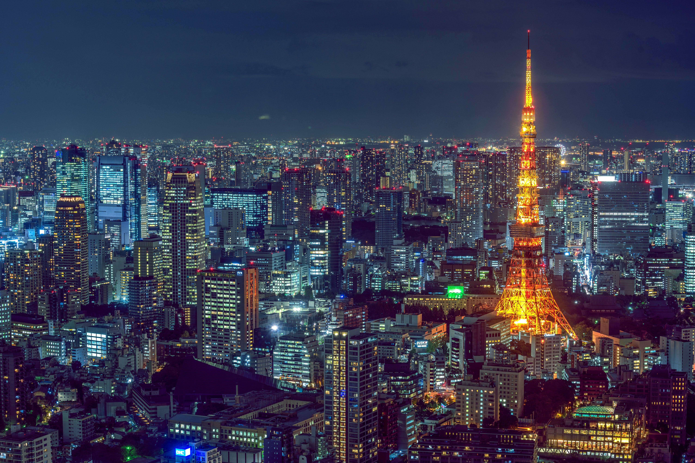
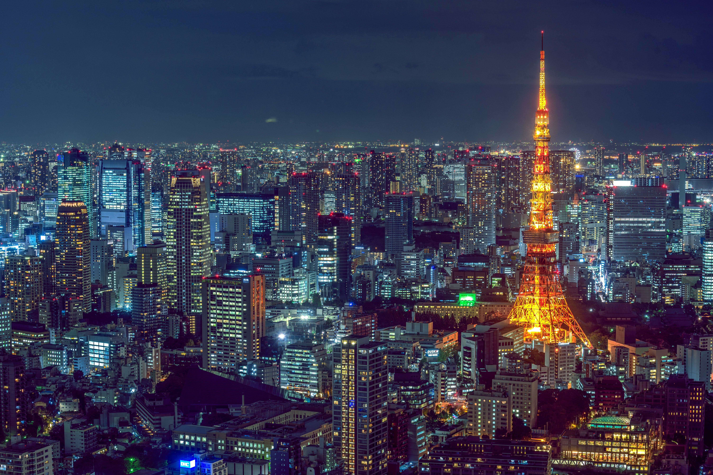
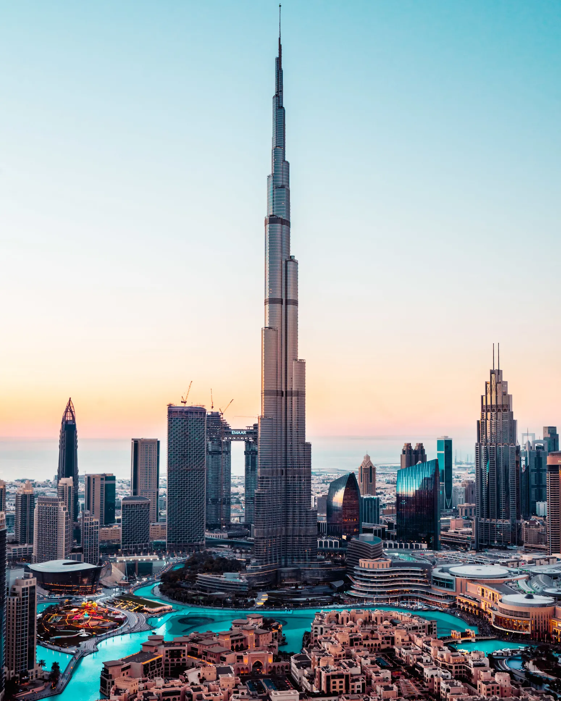
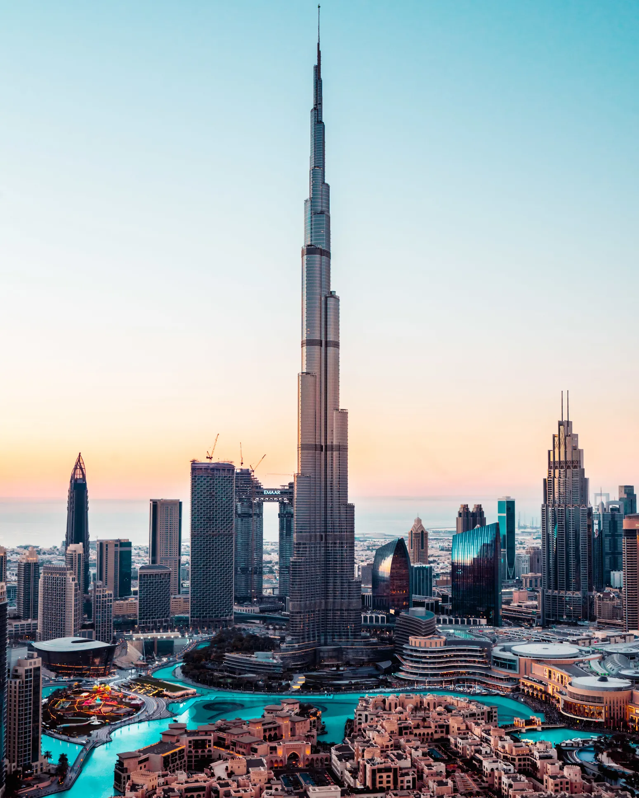

Explore Iconic Destinations with Travel Adventures
Embark on a journey to some of the world's most enchanting and iconic destinations with Travel Adventures. From the romantic streets of Paris to the bustling energy of New York City, each of these destinations offers its own unique blend of culture, history, and adventure. Let us be your guide as you uncover the wonders of these captivating cities.
1. Paris, France: City of Love and Light
Experience the magic of Paris, where every corner tells a story of romance and beauty. Stroll along the charming streets of Montmartre, where artists and poets once found inspiration amidst cobblestone alleys and quaint cafes. Admire the timeless elegance of the Eiffel Tower as it shimmers against the night sky, and indulge in delectable pastries at a local patisserie. From the iconic landmarks to the hidden gems, Paris is a city that will capture your heart at every turn.
2. Rome, Italy: Eternal City of History and Culture
Step back in time and immerse yourself in the rich history and culture of Rome. Explore the ancient ruins of the Colosseum and the Roman Forum, where emperors once ruled over a vast empire. Marvel at the intricate beauty of the Vatican City, home to the awe-inspiring St. Peter's Basilica and the iconic Sistine Chapel. With its timeless architecture, mouthwatering cuisine, and vibrant street life, Rome is a city that promises to leave a lasting impression on every traveler.
3. Tokyo, Japan: Metropolis of Tradition and Innovation
Enter the dynamic and futuristic world of Tokyo, where ancient traditions coexist with cutting-edge technology. Explore the bustling streets of Shibuya, where neon lights and bustling crowds create a mesmerizing spectacle. Immerse yourself in Japanese culture with a visit to Senso-ji Temple in Asakusa and the tranquil gardens of the Imperial Palace. Indulge in culinary delights at a local izakaya or sushi bar, and shop for the latest gadgets and fashion trends in trendy neighborhoods like Harajuku and Ginza. In Tokyo, the possibilities are endless and the experiences are unforgettable.
4. Bali, Indonesia: Island Paradise of Serenity and Spirituality
Escape to the tranquil paradise of Bali, where lush jungles, pristine beaches, and ancient temples await. Relax and rejuvenate in a luxury villa surrounded by emerald rice terraces, or dive into the turquoise waters teeming with vibrant marine life. Explore the cultural heart of Ubud, where traditional dance performances and artisan crafts offer a glimpse into Balinese heritage. From sunrise yoga sessions to sunset beach parties, Bali is a haven for relaxation, adventure, and spiritual renewal.
5. New York City, USA: The City That Never Sleeps
Enter the vibrant and electrifying world of New York City, where skyscrapers touch the sky and dreams are made on every street corner. Take in the iconic skyline from the top of the Empire State Building, stroll through Central Park, and catch a Broadway show in the Theater District. Explore diverse neighborhoods like Chinatown, Little Italy, and Greenwich Village, each offering its own unique flavor and charm. In New York City, the possibilities are endless and the energy is contagious.
6. Dubai, UAE: Oasis of Luxury and Innovation
Experience the opulence and grandeur of Dubai, where futuristic skyscrapers stand in contrast to ancient desert landscapes. Marvel at the world's tallest building, the Burj Khalifa, and shop till you drop in the extravagant malls and souks. Indulge in a desert safari, where you can ride camels across golden dunes and watch the sun set over the Arabian horizon. With its world-class amenities and larger-than-life attractions, Dubai is a city that redefines luxury and adventure.
7. Switzerland: Alpine Wonderland of Natural Beauty and Adventure
Journey to the breathtaking landscapes of Switzerland, where snow-capped peaks, pristine lakes, and charming villages await. Explore the picturesque towns of Interlaken and Zermatt, nestled amidst the majestic Swiss Alps. Embark on a scenic train journey aboard the Glacier Express, winding through lush valleys and towering mountains. Indulge in outdoor adventures like skiing, hiking, and paragliding, or simply relax and soak in the stunning alpine scenery. With its timeless beauty and outdoor pursuits, Switzerland is a paradise for nature lovers and adventure enthusiasts alike.
8. Goa, India: Coastal Haven of Sun, Sand, and Spirit
Experience the laid-back vibes and tropical beauty of Goa, India's premier beach destination. Lounge on the golden sands of Anjuna and Palolem beaches, where palm trees sway in the ocean breeze and the sound of waves lulls you into relaxation. Explore the vibrant nightlife of Baga and Calangute, where beach shacks and bars come alive with music and dance. Discover the rich cultural heritage of Old Goa, home to ancient churches and colonial architecture. Whether you're seeking adventure or tranquility, Goa has something for everyone.
Embark on Your Next Adventure:
Ready to explore these captivating destinations and more? Join us as we journey across the globe in search of adventure, discovery, and unforgettable experiences. Whether you're a seasoned traveler or a first-time explorer, let Travel Adventures be your guide to the world's most inspiring destinations.

 


 
